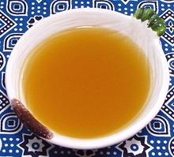

 |
Vegetable Stock - SyrianSyria | ||||
| Makes: Effort: Sched: DoAhead: |
5 cups ** 1-1/4 hr Yes |
This stock is a bit unusual, due to the amount of spicing included, but it goes well in lentil, bean or grain soups, or other vegetarian recipes that could use a touch of spice. | |||
|
|
----- 6 5 5 1 ----- 5 5 2 1/4 1/4 1/2 1/2 ----- 1/2 5 1 |
--- cl oz oz --- in t t t t --- T c t |
-- Vegetables Garlic Onion Tomato, ripe Dried Lime (1) -- Spices Cardamom pods (2) Cloves Cinnamon Ginger, ground Turmeric 7 Spices (3) Peppercorns --------- Olive Oil Water Salt |
Make: - (1-1/4 hr - 15 min work)
|